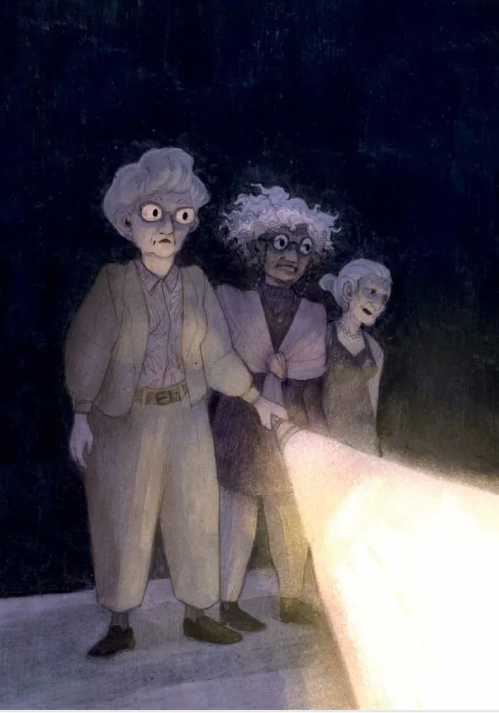
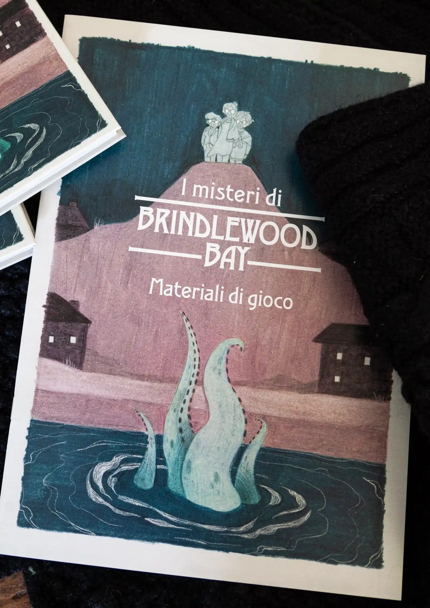

Un piccolo paese del New England, un club di lettrici appassionate e misteri che si
risolvono grazie alla fantasia dei giocatori: ecco perché Brindlewood Bay ci ha stregati.

In breve
Autore: Jason Cordova Editore: Compagnia delle 12 Gemme (ed. italiana) Anno: 2024 Formato: Libro / PDF
Introduzione
I Misteri di Brindlewood Bay Capitolo 1 - Introduzione“E' un sabato sera nel piccolo villaggio costiero chiamato Brindlewood Bay. Il turismo estivo ha ceduto il passo ai vicoli deserti della stagione autunnale e come ogni sabato sera, al secondo piano del negozietto “Libri al Lume di Candela” si incontrano le “Signore del Giallo”. Adorabili vecchiette che si ritrovano per animarsi sugli episodi più belli del libro letto durante la settimana. The, biscotti, maglioni fatti ai ferri, peonie, un goccio di gin nel the per scaldarsi un po' di più, un gatto seduto sulle ginocchia. Tutto procede come ogni sabato sera, ma.. dirimpetto al piccolo edificio, dall' angusta via di fronte, una figura incappucciata osserva nelle tenebre la finestra illuminata..”
Il Gioco di Ruolo
Capitolo 2 - Il Gioco di RuoloQuesto potrebbe essere l'incipit perfetto di una avventura del Gioco di Ruolo
“I Misteri di Brindlewood Bay” I Misteri di Brindlewood Bay è un gioco di ruolo di Jason Cordova, portato in Italia dalla Compagnia delle 12 gemme, che ricevuto la menzione speciale da parte della giuria del premio “Gioco di ruolo dell’anno 2024”. Brindlewood Bay è un piccolo paese costiero del New England, un vecchio villaggio di balenieri adesso luogo di visitatori e turisti, fatto di piccoli negozietti di souvenir, di ristoranti intimi e di piccole gallerie d’arte. Ma ogni sabato al secondo piano delle piccola Libreria “Libri al lume di Candela” si incontrano le Signore del Giallo. Ed i giocatori interpreteranno proprio queste adorabili vecchiette che si ritroveranno ad indagare su i misteri di Brindlewood Bay, esattamente come la nostra amata Jessica Fletcher a Cabot Cove.
Regole del gioco
Capitolo 3 - Regole del giocoIl gioco si svolge come una vera e propria indagine e si sviluppa in mosse, ovvero: quando i giocatori narrano un azione che potrebbe essere riconducibile ad una mossa delle 6 mosse di base, il Custode fa tirare una coppia di d6, ne aggiunge o sottrae l’abilità legata e ne interpreta l’esito. Il tiro di dadi può avere vantaggio o svantaggio a seconda se si possiede una condizione (invalidante) oppure se si utilizza un oggetto dal posticino confortevole. Una mossa può far trovare indizi o comunicare l’esito di un azione. Inoltre, oltre alle 6 mosse di base, ogni adorabile vecchietta ne ha una propria, scelta nella creazione del PG, che porta il nome di uno dei protagonisti dei telefilm degli anni 70/80, in pieno stile del GDR. Una volta raccolto il numero di indizi sufficiente, si può utilizzare la mossa “Congetturare” per provare a formulare la soluzione del caso. Ma sarà la verità?
Il Mistero
Capitolo 4 - Il MisteroLa cose decisamente interessante e che ci è piaciuta moltissimo di questo gioco di ruolo è che della soluzione del mistero, non ne è a conoscenza nemmeno il custode. La soluzione del mistero viene unicamente dalla congettura dei giocatori. Una volta interconnessi gli indizi trovati e formulata la congettura, sarà il tiro di dadi a decretare se quella è veramente la realtà degli eventi e che grado di successo ha raggiunto l’indagine delle signore.
La Campagna
Capitolo 5 - La CampagnaI Misteri di Brindlewood Bay nasce per una campagna di 7/8 incontri, nei quali le adorabili vecchiette risolvendo i casi ,verranno a conoscenza di un culto ellenico, le cui trame si dipanano nelle piccole stradine della cittadina del New England. Una volta terminata la campagna e portate al massimo le statistiche della signora, per giocare nuovamente si crea una nuova signora del giallo e si sviluppa un nuovo culto a Brindlewood Bay e tutto sarà completamente diverso. Ogni caso, anche se giocato più volte, darà un esito ed un indagine completamente diversa, lasciando un ampissimo margine di narrazione e fantasia ai giocatori, alternando momenti di esilarante comicità a momenti di palpabile tensione e sconcerto.
Creazione del Personaggio
Capitolo 6 - Creazione del PersonaggioUn altra delle cose che ci è piaciuta moltissimo è la creazione della propria “Jessica Fletcher”: veloce, immediata e divertente, grazie al fatto che, sia il Custode che gli altri giocatori parteciperanno attivamente alla delineazione delle caratteristiche del nostro personaggio.
Conclusione
Capitolo 7 - ConclusioneUn plauso di devozione alla compagnia delle 12 gemme che lo ha portato in Italia e ne ha realizzato una versione di pregio, che impreziosisce la nostra collezione! Gloria e Dadi!

“La soluzione del mistero viene unicamente dalla congettura dei giocatori.”
🛒 Dove Acquistare
Se vuoi aggiungere I Misteri di Brindlewood Bay alla tua collezione, puoi trovarlo qui:
Ti è piaciuto questo articolo?
Seguici sui social per non perdere i prossimi contenuti e condividi questo articolo con la tua community!